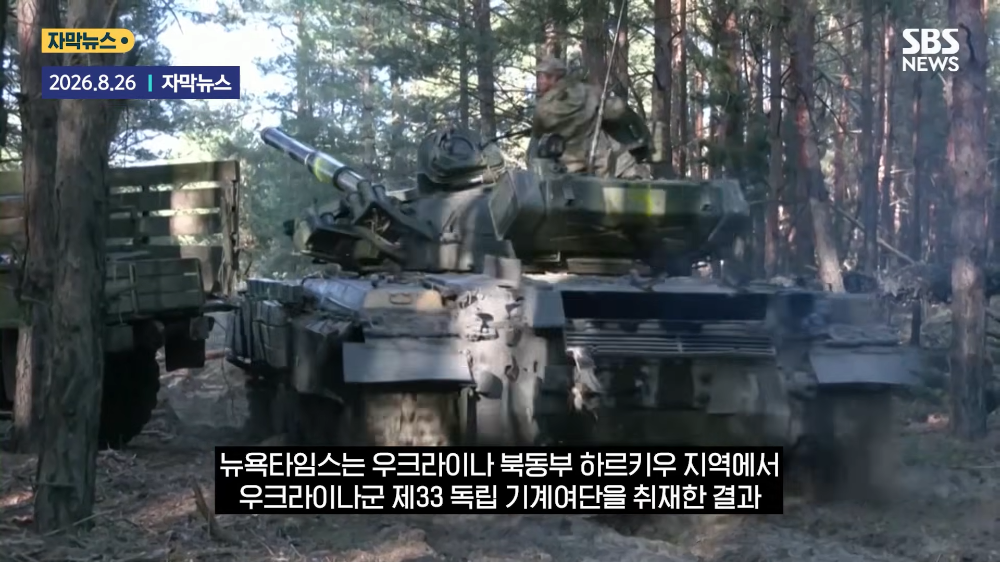
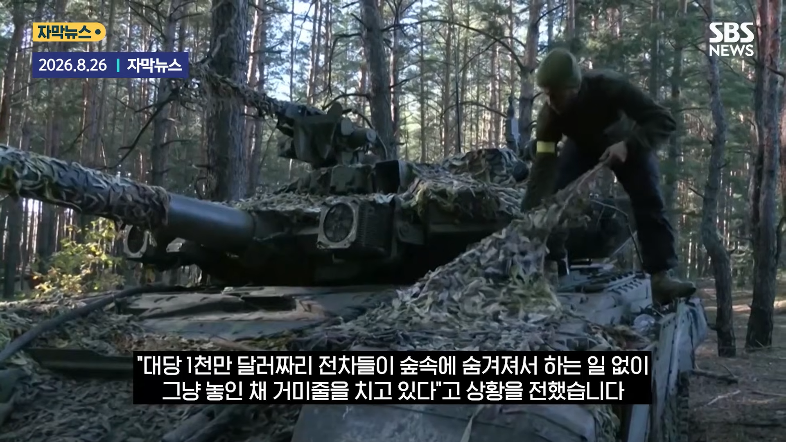
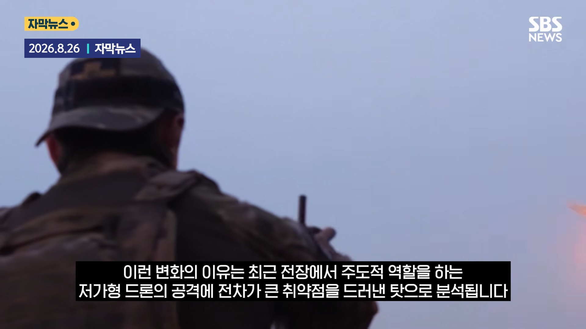
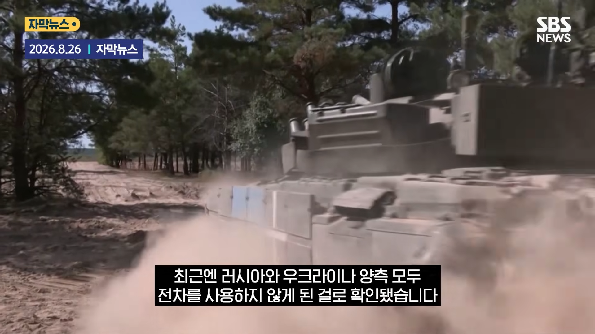
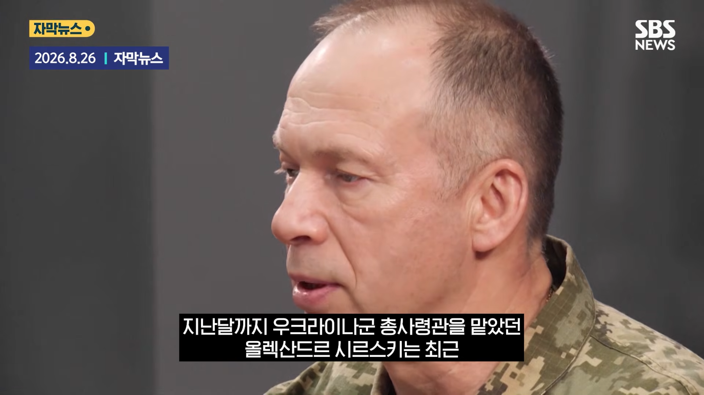
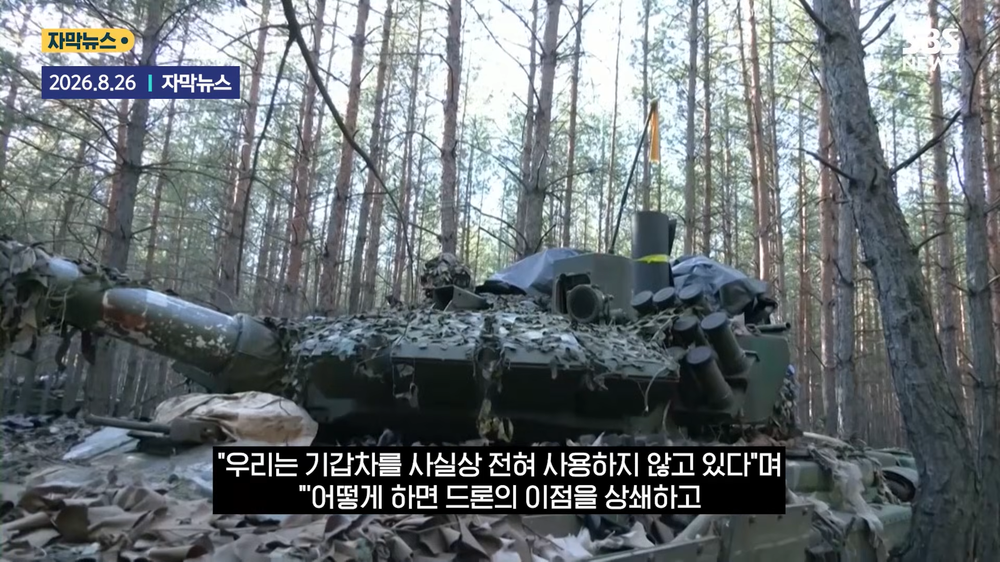
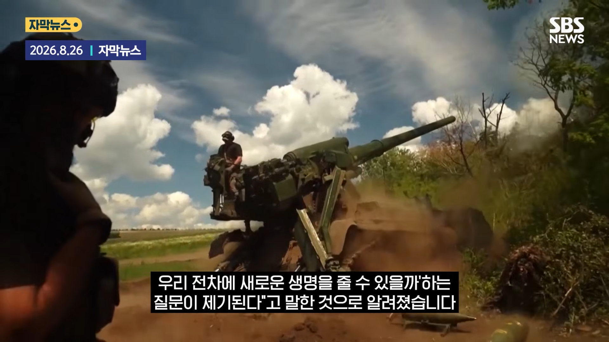
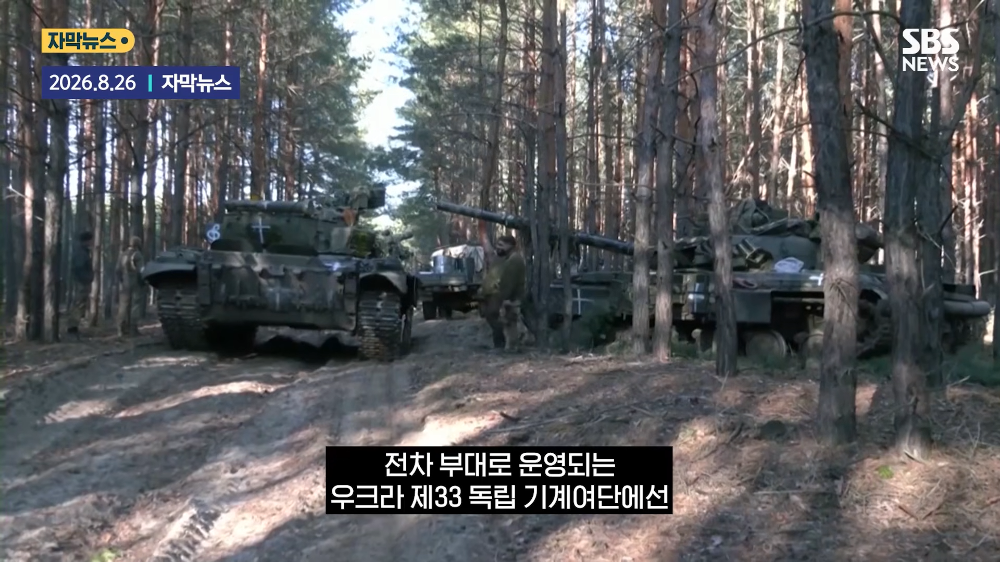
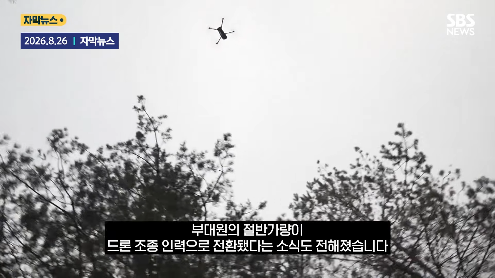

드론 때문에 우크라이나 러시아 모두 전차 사용을 포기 했다고 함









드론 때문에 우크라이나 러시아 모두 전차 사용을 포기 했다고 함
대드론전차나 장갑차 나오면 다시 재개
우크라이나 같은 경우 땅 내주더라도 러시아군 최대한 갉아먹는 전략을 택했으니
공격용 무기인 전차를 쓸 일이 없는 거지
밭을 갈아줄 화력이 없는데, 수확기가 뭔 소용이야
APC나 IFV는 그래도 아직 입지가 있을거 같은데 아니려나
APC 에 병력 옹기종기 모여있으면 드론에 정말 맛좋은 타겟이 될듯..
안그래도 지금 기갑 주력은 장갑차라고 하더라. 전차보다는 드론에 유연하게 대처하기 좋고 지금 전황이 보병중심으로 돌아가다보니... 정말 기술의 발전은 모를일이야
전차 한 대 만들 돈으로 드론 수백대 만드는 게 나은 시대가 오는 건가
포트리스에서도 슈탱뽑을수있으면 슈탱쓰지 굳이나 딴거 쓸 이유가 없긴함
참모총장 바뀐 직후에 뜬금포로 나온 기사인데다 내용은 불과 몇주전 나온 정보부 보고서와 딴판이고 근래 더이상의 기갑공세는 없었다는데 바로 2주 전에 러시아가 시즌 292839471호 트라이했음
늘 그렇듯 이런 이슈에서 메이저 언론의 공개정보는 프로파간다성이 짙으므로 좀 걸러봐야됨
https://researchcentre.army.gov.au/library/land-power-forum/drone-warfare-ukraine-myths-operational-reality-part-1
https://researchcentre.army.gov.au/library/land-power-forum/drone-warfare-ukraine-myths-operational-reality-part-2
진짜 양질의 정보는 이런데서 얻을 수 있는데 이쯤가면 사실상 비공개정보나 다름없지..
그거 러시아가 아레나 M 달고 공세했던 건 아님? 능방장치 탄약 떨어질때까지 드론을 잡는 분투를 했지만 결국 탄약 떨어지고 나서 드론 쳐맞고 격파당해서 공세 말아먹었자너.
현존하는 대드론 체계 중에 최고급품이 아레나M 같은 능방장치인데 그걸 뚫었다는 점에서 전차 무용론이 퍼질만도 하지.
정작 당시 아레나 달고 투입된 떼구공은 SBU 양반한테 꽤 후한 평가를 받았음
기존의 해모수 스킨 씌운 놈들과 달리 전투역량이 유지되면서 격파에 필요한 FPV 드론 숫자가 두배로 늘었다고
뽈갱이들이 쿠르스크 전투 기간에 손실률이 대략 30~40%, 욤 키푸르 전쟁 당시 아랍군이 보름간 50%를 찍은걸 보듯 전차라는게 원래 잘 터져나가는 물건임
글고 이런 무용론 하니 요거 관련해서 개인적으론 오히려 해군쪽이 앞으로 빨간약 먹을 가능성이 높다고 보는데
아무리 동시교전능력이 높아도 현재 기술로는 타겟 분배 문제를 해결할 방법이 없어서 전봇대 스팸에 답이 안나오는 상황임
데이터링크 따위로 해결이 가능했으면 그 컴퓨팅 자원의 1%도 안먹을 스타크래프트에 같은 알고리즘 적용해서 오버킬 없고 스플래시 범위까지 치밀하게 계산된 시즈탱크 2부대의 낭비없는 일제사에 드라군 3부대가 정직하게 녹아내릴 테란이 무친 개사기 팩션이 되었겠지..
근데 이것도 지금 우크라이나서 고전중인 체계들과 마찬가지로 일단 배를 띄워야 해역통제가 가능하고 이렇게 통제를 하는쪽이 주도권을 잡는 거라.. 하여간 골치아픈 문제임
개인적으론 맥심과 개틀링으로 우가우가 토인들 사냥하던 시절로 돌아가지 않는 이상 아무리 성능 좋고 잘 빠진 놈을 가져와도 과거와 같은 일방적인 구도는 나오기 힘들거라고 봐오
양질의 정보 추천해오
M48 전차대대 나왔는데
전차가 드론에 허무하게 막히는게 세상이 많이 변한거 같다.
전차 기동할때 보면 웅장 하긴함
포 쏘면 놀라고
타면 개졸림
한국은 종심 대비 화력이 너무 과잉이라 드론 자체가 재래식 무기체계보다 우선하긴 힘들거임
중국이라도 참전하는 거 아니고서야 가성비 따지기 전에 남은 무기 다 쏟아붓고 전쟁이 어느 정도 확실히 기울어 있을 것
와. 병력 절반이 드론 조종으로 빠지다니.. 진짜 SF영화처럼 사람은 전선에서 빠지고 드론들만 싸우는 전쟁이 곳 다가올거 같다..
드론에 사업계획과 예산을 늘려야하는거 아닌지...이란이나 러우를 봐도 대한민국 남북처럼 군사예산이 압도적으로 비대칭일때 격차를 줄여주는데 너무 효과적임. 군사드론이든 안티군사드론이든 집중예산하고 육성해야될거같음
값싼 드론으로 대량으로 공격해오면 비싼 전차는 전혀 제값을 못 하니까...
전차가 별로인게 아니라 드론 방어 무기가 별로인거임 애초에 전차는 드론 막는 역할이 아닌데 전차한테 왜 드론 못 막냐고 하는게 말이 안되는거임 걍 전차한테는 전차의 역할이 있고 드론한테는 드론의 역할이 있는거지 딱히 드론이라고 만능도 아님 결국 전선을 미는건 전차지 드론이 전선을 밀어내지는 못 함
?? 드론은 왜 못밈?
우크라는 드론으로 전선 형성하는 교리를 만들고 있던디??
근데 예전 개념처럼 점령하고 이런게 아니라 그냥 드론으로 들어오면 다죽이는 킬존을 만들어서 무인지대를 유지하는 개념이더라고
22LR을 드론 근접방어용으로 쓰면 어떨까 싶었는데
사거리가 병신....크흡....
전차를 드론운용 이동진지로 쓰고 드론 레이디랑 전차 전방위에 재밍 달고 전차타고 이동하면서 드론 조종하고 역으로 자기 노리러 오는 드론은 무력화 하면 그게 지상캐리어고 지상항공모함 아닌가
그래서 스타1 플토 최종유닛이 캐리어구나 ㅋㅋㅋ
미사일시대가 됐다고 항모가 쓸모없다고 말하는거 같은 느낌인데
자폭드론 하나가 탱크를 뚫을수있어?
가능성도 있고 관측경이나 아님 궤도에 들이박아서 폭팔해도 못움직이니 개 이득이잖음
말 그대로 고철 만들어버려서 못쓰는거구나
숙련된 조종사, 정비사, 정보 분석가, 전자전 전문가, 지휘관이 갖춰진 대대 규모의 킬체인 환경 하에서
능방 달린 전차를 무력화 시키는데 15~25대
지붕 뒤집어 쓴 놈은 40대 이상이 필요하고 성공률은 30% 언저리
우리가 보는 영상들은 그.. 고인의 생전 개쩌는 플레이 모아둔 매드무비에 가까움
일일 손실률 보면 2대전 이래 가장 파괴적인 전쟁인데 정작 영상은 감질맛 나게 뜨는 이유가 있는거지..
하나로는 아니고 개때같이 달려들긴 함.. 근데 그게 무서운거지
벌쳐 뽑을때 된것같다
진격전이면 어떻게든 진행되면 쓰기라도 할탠데 지금 그것도 아니고 드론 때문에 가성비 창난게 크네
더많은포탄,,